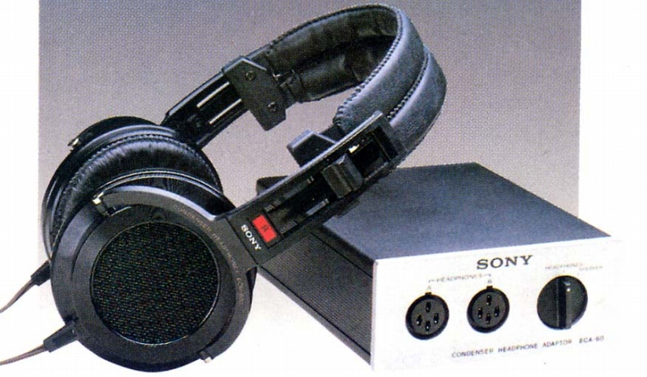

ECR-600

■価格 17,000円■型式 ユニエレクトレットコンデンサー型■振動板 3ミクロン厚不等辺五角形ダイヤフラム■インピーダンス ■再生周波数帯域 20-30,000Hz■許容入力 ■感度 86ｄB SPL/1VRNS■コード 2.5ｍ 4線平行■重量 380g（コード含まず） アダプター700ｇ■発売 1979年4月■販売終了 1982年頃■備考 アダプター付属の場合 ECR-660 24,800円（アダプターの単体販売は無し）
ソニーのインデックスへ